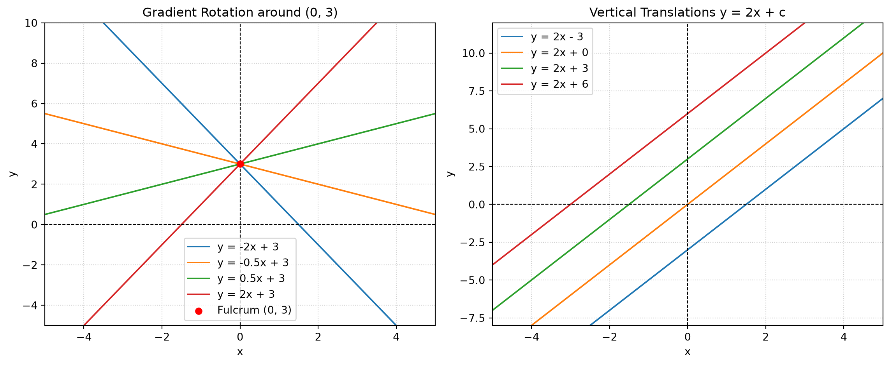

Code
import matplotlib.pyplot as plt
import numpy as np
x = np.linspace(-5, 5, 200)
fig, (ax1, ax2) = plt.subplots(1, 2, figsize=(12, 5))
# Subplot 1: Rotational effect around fulcrum (0,3)
m_values = [-2, -0.5, 0.5, 2]
for m in m_values:
ax1.plot(x, m * x + 3, label=f'y = {m}x + 3')
ax1.scatter([0], [3], color='red', zorder=5, label='Fulcrum (0, 3)')
ax1.axhline(0, color='black', linewidth=0.8, linestyle='--')
ax1.axvline(0, color='black', linewidth=0.8, linestyle='--')
ax1.set_xlim(-5, 5)
ax1.set_ylim(-5, 10)
ax1.set_title('Gradient Rotation around (0, 3)')
ax1.set_xlabel('x')
ax1.set_ylabel('y')
ax1.grid(True, linestyle=':', alpha=0.6)
ax1.legend()
# Subplot 2: Vertical Translations y = 2x + c
c_values = [-3, 0, 3, 6]
for c in c_values:
ax2.plot(x, 2 * x + c, label=f'y = 2x + {c}' if c >= 0 else f'y = 2x - {abs(c)}')
ax2.axhline(0, color='black', linewidth=0.8, linestyle='--')
ax2.axvline(0, color='black', linewidth=0.8, linestyle='--')
ax2.set_xlim(-5, 5)
ax2.set_ylim(-8, 12)
ax2.set_title('Vertical Translations y = 2x + c')
ax2.set_xlabel('x')
ax2.set_ylabel('y')
ax2.grid(True, linestyle=':', alpha=0.6)
ax2.legend()
plt.tight_layout()
plt.show()